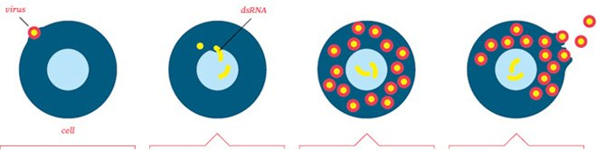

Week 1
Antivirals
Antiviral Pharmacology Basics
This lecture covers non-HIV antivirals. HIV gets its own antiviral content on the HIV & Antiretroviral Therapy page. Antivirals are a relatively new drug class — the first ones came out in the 1990s — and there are far fewer of them than there are antibiotics.
Why There Are So Few Antivirals
- A virus can only replicate once it's inside a living host cell — so for an antiviral to work, it has to get inside the patient's own cells too.
- Viruses don't have a cell wall of their own (unlike bacteria, which is what most antibiotics target). A virus lives by inserting its RNA or DNA into a healthy human cell and replicating from inside it.
- Because the virus lives inside our own cells, a drug that kills the virus risks killing healthy cells along with it — a much harder balance than antibiotics have, since bacterial cells are a separate target.
- Most antivirals only work during the replication phase, and signs/symptoms often don't show up until the virus has already finished replicating — so there's a narrow window where the drug can actually do anything.

General mechanism: antivirals work by inhibiting viral replication, which then allows the body's own immune system to clear the virus. Antivirals are only effective against a handful of viruses.
| Virus | Drug(s) | Covered |
|---|---|---|
| Herpes Simplex / Varicella-Zoster | Oral herpes, genital herpes, shingles (herpes zoster), chickenpox/varicella | Acyclovir, valacyclovir, famciclovir — this page |
| Influenza A (some B) | The flu | Oseltamivir (Tamiflu) — this page |
| Cytomegalovirus (CMV) | Concerning only in immunocompromised patients | Ganciclovir — this page |
| RSV | A common virus in children | Named in lecture, no specific drug given |
| Hepatitis | Viral hepatitis | Covered in the hepatitis lecture |
| HIV | — | See HIV & ART |
Herpes Simplex & Varicella-Zoster — Acyclovir, Valacyclovir & Famciclovir
All three drugs work the same way and are in the same class. The lecture focused on acyclovir specifically — valacyclovir and famciclovir are alternatives in the same family.
Acyclovir — Three Mechanisms of Action
- Interferes with viral nucleic acid synthesis — stops viral DNA and RNA synthesis.
- Prevents the virus from binding to the cell, so it can't get in and can't replicate further.
- Turns on the body's own immune system to help kill the virus.
| Term | Detail |
|---|---|
| Indications | Oral herpes, genital herpes, shingles (herpes zoster), chickenpox/varicella — all caused by the same virus family. |
| Routes | Oral tablet, liquid, topical ointment, and IV. |
| Not a Cure | Decreases the severity and frequency of outbreaks, reduces viral shedding, and decreases the duration of illness — but doesn't eliminate the virus. It stays dormant in the body. |
| Treatment Pattern | Used for both the initial infection and recurrent outbreaks — often prescribed with refills, since outbreaks can reoccur and need repeat courses. |
| Side Effects | GI distress, renal impairment, seizures. Use cautiously in patients with ITP (idiopathic thrombocytopenia) — a low starting platelet count. |
Epidemiology asides the instructor flagged as not heavily tested: about 1% of the population has genital herpes, and it's about twice as common in women as in men. HSV-1 generally occurs above the waist, HSV-2 below the waist. Herpes zoster (shingles) affects about 1 in 3 Americans.
There is a shingles vaccine (Shingrix) — a live vaccine given to people age 50 and older to help prevent shingles. It reduces the risk of shingles and decreases the frequency and severity of outbreaks if it does occur.
Influenza — Oseltamivir (Tamiflu)
| Term | Detail |
|---|---|
| Target | Best against influenza A; does have some action against influenza B. Also approved for the swine flu. |
| Mechanism | Inhibits neuraminidase, an enzyme flu viruses create to replicate — stopping viral replication. |
| Timing | Must be started before or within 48 hours of symptom onset. |
| Use Pattern | Primarily used for prophylaxis after exposure rather than treating active disease — typically reserved for elderly and immunocompromised patients after exposure, to avoid driving flu resistance to the drug. |
| Route | PO only. |
| Side Effects | Nausea, vomiting, seizures, renal impairment. |
Once a patient is sick enough to be hospitalized for the flu, oseltamivir may still be tried, but if it's outside that 48-hour window it's unlikely to help — the virus has usually already finished replicating by the time someone is that sick.
Cytomegalovirus — Ganciclovir
| Term | Detail |
|---|---|
| Treats | CMV (cytomegalovirus). |
| Population | Only a concern in immunocompromised patients — transplant recipients and immunosuppressed/AIDS patients. Not a concern for the general population. |
| Not a Cure | CMV can't be cured. Affected patients have recurrent infections. |
| CMV Retinitis | CMV infection in the eye — treated with an intraocular (into-the-eye) injection of ganciclovir. |
| Other Presentation | In other immunocompromised patients, CMV can present as a respiratory infection. |
| Mechanism | Inhibits viral DNA polymerase, causing chain termination — stops viral replication. |
| Routes | IV or PO. Usually started IV for a few weeks, then transitioned to an oral tablet. |
| PO Handling | Don't crush or split the tablet — it can irritate the skin. If it does get on bare skin, wash with soap and water. |
Ganciclovir is cleared through the kidneys — use caution with other nephrotoxic drugs and watch renal function.
Self-Test Flashcards
Click a card to flip it and check your answer.
Practice Questions
NCLEX-style practice questions covering this page's highest-yield content. Choose your answer for each, then submit to see your score and rationales — the same 19 questions also live in the Build Your Own Exam question bank.